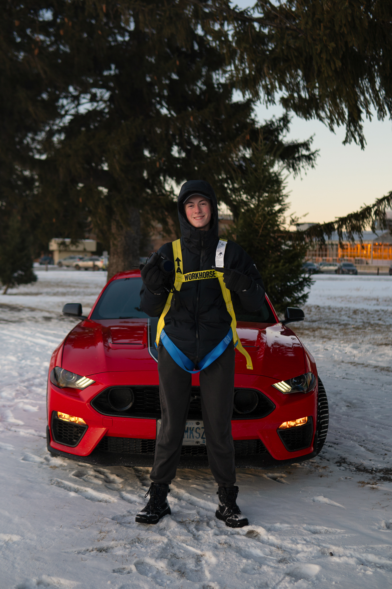

Griffin Richardson
Hello my name is Griffin and I'm an automtive photographer and a fisrt year at algonquin college in the IMD program. I decided to take this program because it sounded like something i'd be intrested in, plus I'd be learning new employable skills well expanding on my existing expertise. My dad is also a computer programmer so I thought I'd follow in his footsteps in a way and learn more about the programming world.
I was born in Ottawa back in 2007. As a kid I played a variety of sports such as basketball, baseball, and soccer, I also did skiing in the winters for fun. While I enjoyed doing physical activity I also got into taking photos with my dad's old Nikon where I primarily did wildlife photography until two years ago when I was picked up as a photographer for a local car club. From there my popularity in the city skyrocketed and today I'm the third biggest automotive photographer in Ottawa! The main thing I've from building my own buisness is to Fake it till you make it
-Griffin R. .
About Me
My Hobbies
- Photography
- Racing cars
- Gambling